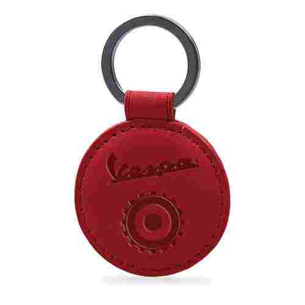
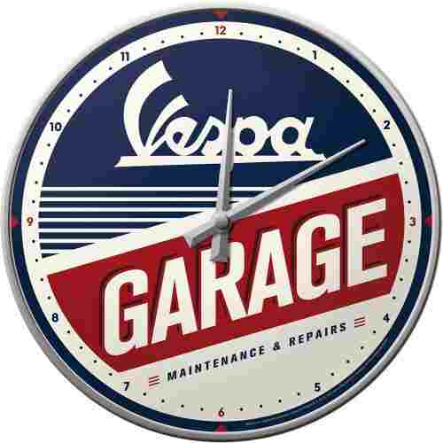

MUNDO VESPA
Personaliza tu vehículo
Descubre todos los accesorios originales para hacer de tu Vespa una pieza única.
Alarma electrónica
- Sistema electrónico antirrobo que protege su vehículo.
- Dispone de una batería de respaldo con un consumo de energía muy bajo.
- Incluye un mando a distancia.
- El dispositivo tiene un detector de movimiento que activa la sirena cuando alguien intenta mover la motocicleta.
Kit parabrisas
- Parabrisas fabricado en metacrilato de alta calidad, resistente a impactos, de 4 mm de espesor.
- Acabado de los soportes en consonancia con el estilo del vehículo.
- Ofrece una protección eficaz contra la intemperie y una excelente visibilidad.
Lona cubrevehículo
- Lona cubrevehículo para exteriores.
- Materiales de alta calidad.
- Dotada de alojamientos retráctiles para alojar accesorios.
- Personalizada con logotipo Vespa.
- Protege el vehículo contra la intemperie y los arañazos.
Parrilla frontal
- Utilizado junto con el portaequipajes trasero cromado, este elegante accesorio complementa el aspecto de la Vespa haciéndolo aún más exclusivo.
Parrilla trasera
- Práctico soporte plegable que ofrece una excelente capacidad de carga.
- Galvanizado especial que evita su oxidación.
- Muy valorado entre los "Vespistas" que buscan un original y exclusivo accesorio.
Casco heritage
- Carcasa de resina termoplástica inyectada.
- Perfiles cromados.
- Barboquejo con enganche micrométrico.
- Interior de gamuza en color tabaco, de alta resisitencia.
- Pintura a prueba de rayos UV.
Casco jet carbono
- Casco Jet con carcasa de fibra.
- Color negro trameado en carbono.
- Ribete en ecopiel cosido directamente sobre la carcasa.
- Revestimiento interior en tejido analérgico, extraíble y reemplazable.
- Sujeción trasera para gafas en ecopiel con corchete automático y logo "Vespa" en aluminio.
- Cierre micrométrico.
Cubremanos
- Cubremanos de material impermeable, acolchado con material térmico para garantizar una perfecta protección de los agentes atmosféricos en los períodos invernales.
- Logo Vespa de metal.
Guantes touch
- Guantes en tejido técnico con inserciones de microfibra y zonas elásticas para máxima comodidad y máxima transpiración.
- Inserción en la punta del índice, en material técnico conductor que permite el control de pantallas táctiles en dispositivos multimedia.
- Tejido de malla perforada y elástico.
- Palma de microfibra de ante de alta resistencia.
- Puño de neopreno con cierre de Velcro.
- Logotipo Vespa impreso por inyección en el dorso de la mano.

Llavero open
- Llavero de cuero auténtico personalizado con un logotipo Vespa estampado en caliente.
- Dimensiones: 5 cms.

Posavasos metálico
- El icónico "Style of Vespa Service" acompañará tus momentos de relax.
- Parte posterior recubierta de corcho.
- Superficie frontal metálica.
- Dimensiones: 90x90 mm.

Reloj de Pared
- Un bonito toque Vespa dentro de tu apartamento.
- Este reloj de pared, en caja metálica y frente de cristal curvo, tiene un mecanismo de relojería alimentado por batería.
- Dimensiones: Ø310 mm